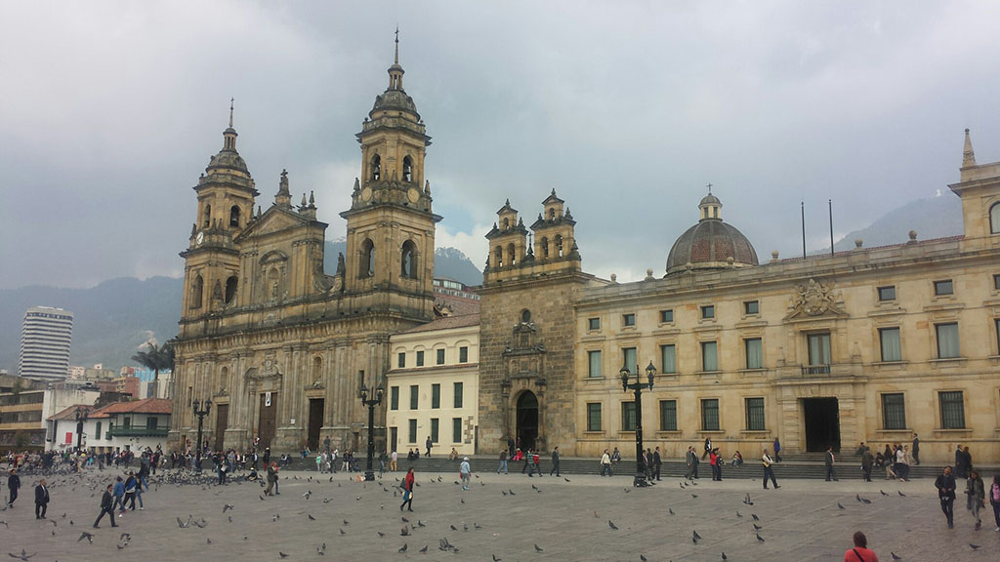

El Museu de l'Or del Banc de la República de Colòmbia és una institució oberta al públic la finalitat és l'adquisició, conservació i exposició de peces d'orfebreria i terrisseria de cultures indígenes del període precolombí de l'actual Colòmbia. Està situat a la cantonada del carrer 16 amb carrera 5a, al costat oriental del parc Santander, al centre històric de Bogotà.
La plaça de Bolívar és la plaça principal de la ciutat de Bogotà i de Colòmbia. Està situada en el centre de la ciutat, entre les carreres 7a i 8a amb carrers 10a i 11.ª. Al seu voltant es troben alguns dels principals edificis de la ciutat: al nord el Palau de Justícia, al sud el Capitoli Nacional, a l'orient la Catedral Primada de Colòmbia, la Casa del Cabildo Eclesiàstic, la Capella del Sagrario i el Palau Arquebisbal i a l'occident el Palau Liévano, seu de l'Alcaldia Major de Bogotà, i al suroriente el Col·legi Major de San Bartolomé (Bogotà) dels jesuïtes. Va ser proposada com a Monument Nacional de Colòmbia per la resolució 51 del 26 d'octubre de 1994 i declarada com a tal pel decret 1802 del 19 d'octubre de 1995.
Un estudi de la Universitat dels Andes sosté que la plaça de Bolívar té 13.903 metres quadrats (inclosos els carrers del seu voltant) i una capacitat màxima de 55.612 persones.
• Hoteles cerca de Cerro de Monserrate. • Hoteles cerca de Museo del Oro. • Hoteles cerca de Museo Botero del Banco de la República. • Hoteles cerca de La Candelaria. • Hoteles cerca de Parque 93. 